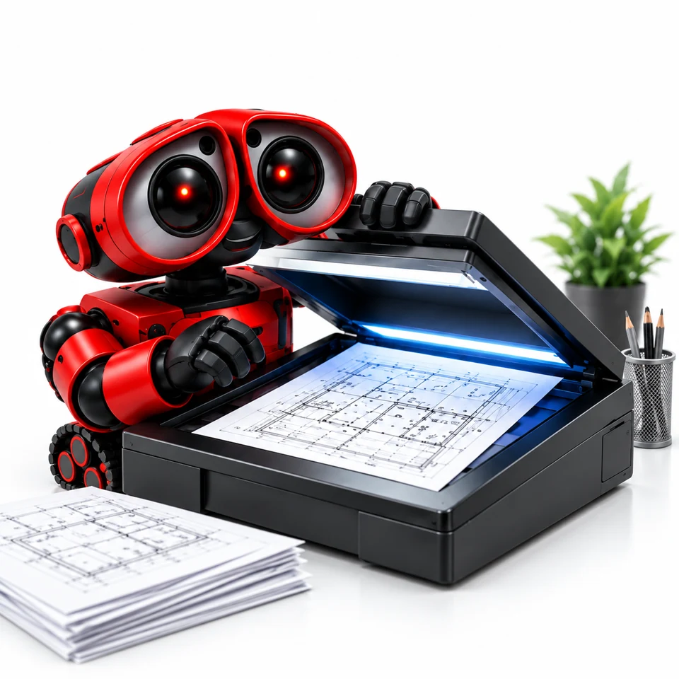

Стоимость онлайн
Параметры и состав цены перед заказом
Переведём бумажные чертежи A4 и A3 в электронный вид. Согласуем детализацию, порядок страниц и формат готовых файлов.

Параметры и состав цены перед заказом
Файл или оригиналы согласуем до работы
Барнаул, Строителей, 11 · отправка по России
Укажите параметры заказа — стоимость пересчитывается сразу.
Ориентиры для конкретных параметров. Вы можете открыть любой пример и изменить его.
A4 · 10 сторон · ручная подача
200 ₽Рассчитать этот вариантA3 · 10 сторон · ручная подача
400 ₽Рассчитать этот вариантA3 · 25 сторон · автоматическая подача
400 ₽Рассчитать этот вариантМаксимальный оригинал — A3. Сканирование A2, A1 и A0 студия не предлагает.
Для сшитых листов — ручная подача; для отдельных листов — автоматическая по калькулятору.
Согласуйте цветность, детализацию, PDF или отдельные файлы и понятные имена страниц.
Выберите параметры, подготовьте файл или оригиналы. До запуска подтвердим стоимость, срок и детали.
Бумажный оригинал оцифровывается и передается в электронном виде. Для сшитых документов используется более трудоемкая ручная подача, поэтому цена отличается.
Заберите заказ в студии или согласуйте доставку. Проверим комплектность и упаковку.
Оригиналы до A3 + ведомость именования/цветности; при масштабе 1:1 укажите контрольный размер.
Сканирование чертежей в текущей услуге ограничено A3.
Для бледных карандашных или цветных пометок лучше согласовать пробный лист.
Не приносите A1/A0, рассчитывая, что он пройдёт через этот сканер.
Не обрезайте поля оригинала заранее, если они несут масштабную информацию.
Сверяем весь лист целиком, особенно рамку, штамп и контрольный размер.
Нет, в студии для этой услуги доступны только A4 и A3. Крупноформатное сканирование A2, A1 и A0 не предлагается. Не складывайте большой оригинал ради сканирования частями без предварительного согласования результата.
Чертежи A4 и A3; сшитые и несшитые документы; ручная подача для сшитых оригиналов и автоматическая подача для несшитых по текущей логике калькулятора.
Оригиналы должны быть читаемыми и пригодными для сканирования. Максимальный формат — A3; A2, A1, A0 и широкоформатное сканирование не предлагаем.
В калькуляторе учитываются: Тип документа, Формат документа, Документ сшит, Количество прогонов. Итог относится к выбранной конфигурации. Доставка согласуется отдельно.
До 25 000 ₽ — 1 рабочий день*. Для большей суммы срок рассчитывается по дневной мощности 25 000 ₽ с округлением вверх. *После полного согласования макета.
Да. Добавьте нужные позиции в корзину и нажмите «Скачать расчёт PDF». В документе будут логотип ТЕКСТ, параметры, список услуг и цены. Это предварительный расчёт; стоимость и срок подтвердим перед производством.
Можно забрать заказ на проспекте Строителей, 11 в Барнауле. Курьерскую доставку и отправку по России, стоимость и срок согласуйте со студией.
Корзина сохраняет расчёт в вашем браузере. Подготовьте запрос, отправьте его вместе с файлами и согласуйте заказ со студией. После подтверждения параметров, макета и оплаты заказ передаётся в работу.
Нет, в студии для этой услуги доступны только A4 и A3. Крупноформатное сканирование A2, A1 и A0 не предлагается. Не складывайте большой оригинал ради сканирования частями без предварительного согласования результата.
Оригиналы должны быть читаемыми и пригодными для сканирования. Максимальный формат — A3; A2, A1, A0 и широкоформатное сканирование не предлагаем.
Бумажный оригинал оцифровывается и передается в электронном виде. Для сшитых документов используется более трудоемкая ручная подача, поэтому цена отличается.